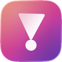

Handstand ProDernière mise à jour : 14 novembre 2026
Handstand Pro est une application d'entraînement au handstand. Votre vie privée compte, et cette app est conçue pour collecter le strict nécessaire.
Votre progression est enregistrée sur votre iPhone : séances réalisées, semaines où votre engagement a été tenu, meilleurs maintiens par exercice, badges, réponses au test de niveau, objectif et fréquence choisis, réglages de son et de rappels. L'heure de votre dernière séance y est aussi conservée, parce que c'est elle qui décide du moment où un rappel est programmé. Nous n'avons accès à rien de tout cela. Ces données peuvent être incluses dans les sauvegardes chiffrées de votre appareil (iCloud ou ordinateur) selon vos propres réglages Apple. Si vous supprimez l'app, elles sont effacées de l'iPhone. Si la synchro iCloud est active, la copie décrite ci-dessous reste dans votre iCloud.
Pour que vous retrouviez votre progression sur vos autres iPhone connectés au même compte Apple, l'app la copie dans votre stockage iCloud (le stockage clé-valeur d'iCloud, sur votre compte Apple). La copie contient votre parcours, vos niveaux, vos séances, vos records, vos jours d'entraînement, vos badges, votre prénom, votre objectif et votre pacte hebdomadaire.
Rien ne passe par nos serveurs et nous n'y avons pas accès : c'est Apple qui stocke ces données, selon les conditions iCloud de votre compte.
La synchro est active par défaut. Vous la coupez dans les réglages de l'app, carte Confidentialité, « Synchro iCloud ». Coupée, l'app n'envoie ni ne reçoit plus rien, et ce qui est déjà dans iCloud y reste. Une remise à zéro de votre progression dans les réglages s'applique aussi à vos autres appareils.
Les réglages de l'app (voix, rappels, apparence) ne sont pas synchronisés. Votre abonnement se retrouve sur un autre appareil avec « Restaurer les achats ».
Si vous activez « Apple Santé » dans les réglages de l'app (à partir de la version 1.3), chaque séance terminée est enregistrée dans l'app Santé de votre iPhone comme entraînement de gymnastique, avec son heure de début et sa durée. Rien d'autre : ni fréquence cardiaque, ni calories.
L'app écrit dans Santé et n'y lit rien. Ces entraînements restent dans Santé, sur votre appareil et dans votre iCloud si vous y synchronisez Santé. Ils ne passent ni par nos serveurs ni par nos outils de statistiques.
Le réglage est éteint par défaut. Vous le coupez au même endroit, ou dans l'app Santé, où vous pouvez aussi supprimer les entraînements déjà enregistrés.
Si vous les activez, l'app programme des rappels d'entraînement et un signal de fin de temps de repos. Ces notifications sont préparées et déclenchées par iOS sur votre appareil, à partir de vos séances passées et de votre engagement hebdomadaire. Rien ne passe par un serveur, et nous ne savons pas si une notification a été affichée ou ouverte. Le minuteur qui s'affiche sur votre écran verrouillé pendant une séance fonctionne pareil : il est calculé sur votre appareil et ne transmet rien.
Handstand Pro propose un abonnement payant. Pour le gérer, certaines données quittent votre appareil :
Ces données sont traitées par Apple (paiement, via l'App Store) et par RevenueCat (gestion des abonnements pour notre compte). Consultez leurs politiques : Apple et RevenueCat. Nous les utilisons uniquement pour fournir l'abonnement, débloquer les fonctionnalités payantes, vous aider en cas de problème et suivre nos statistiques globales de ventes.
Pour comprendre comment l'app est utilisée et l'améliorer, nous mesurons quelques événements d'usage (par exemple : accueil terminé, écran d'abonnement affiché, séance terminée), accompagnés de données techniques (type d'appareil, version du système, langue). Ces signaux passent par TelemetryDeck, un service d'analyse respectueux de la vie privée hébergé en Union européenne. Ils sont anonymisés avant l'envoi : l'identifiant utilisé est irréversiblement haché, et aucune donnée permettant de vous identifier (nom, email, contenu) n'est transmise. Ces statistiques ne sont pas reliées à votre identité et ne servent à aucun suivi publicitaire. Politique de TelemetryDeck : telemetrydeck.com/privacy.
En plus de TelemetryDeck, l'app peut envoyer votre usage à HeyCatch, un service d'analyse édité par HeyCatch, Inc., une société américaine. Il nous montre d'où viennent les gens et à quel endroit de l'app ils s'arrêtent.
Qui est concerné. Si votre compte App Store est dans l'Union européenne, en Islande, au Liechtenstein, en Norvège, au Royaume-Uni ou en Suisse, HeyCatch est coupé. Il ne démarre que si vous l'activez vous-même : Réglages de l'app, carte Confidentialité, « Statistiques HeyCatch ». Partout ailleurs, il est actif dès l'installation, et le même interrupteur le coupe. Si l'app ne connaît pas le pays de votre compte, elle fait comme en Europe.
Ce qui part quand il est actif :
Ne partent jamais : votre prénom, votre email, ni rien de ce que vous tapez dans l'app.
Où vont ces données. Elles sont traitées aux États-Unis, par HeyCatch et ses sous-traitants, dont PostHog qui stocke les événements. HeyCatch peut aussi les faire analyser par des modèles d'IA, via OpenRouter, sous des règles qui interdisent à ces fournisseurs de s'en servir pour entraîner leurs modèles. HeyCatch agit pour notre compte et ne vend pas ces données. Il n'est pas certifié Data Privacy Framework : le transfert hors d'Europe repose sur les clauses contractuelles types de la Commission européenne, intégrées à son contrat de sous-traitance. Sous-traitants : heycatch.ai/subprocessors. Politique de HeyCatch : heycatch.ai/privacy.
Sur quelle base. En Europe, votre consentement : vous le donnez en activant l'interrupteur et vous le retirez en le coupant. Ailleurs, notre intérêt légitime à comprendre comment l'app est utilisée, auquel vous vous opposez avec le même interrupteur.
Combien de temps. Tant que nous utilisons HeyCatch. Si nous arrêtons, HeyCatch efface ou anonymise ces données dans les deux mois.
Quand vous coupez l'interrupteur. L'app arrête d'envoyer et efface l'identifiant d'installation de votre iPhone. Si vous le réactivez plus tard, vous repartez avec un nouvel identifiant, sans lien avec l'ancien. Les événements déjà envoyés restent chez HeyCatch sous l'ancien identifiant : pour les faire supprimer, écrivez-nous.
Les sites handstandpro.app et learn.handstandpro.app n'ont ni compte, ni publicité. Ils chargent HeyCatch pour les visiteurs hors d'Europe, avec la même règle que l'app.
Comment le site décide. Il lit le fuseau horaire de votre navigateur, sans rien envoyer pour cela. Si c'est un fuseau européen, Canaries, Açores, Madère, Chypre, outre-mer français, Islande et Svalbard compris, ou si le fuseau est inconnu, HeyCatch ne se charge pas du tout et rien n'est stocké dans votre navigateur. Partout ailleurs, il se charge. Un Européen en voyage hors d'Europe est donc mesuré comme un visiteur local.
Ce qui part quand il est chargé : les pages vues, les clics, la page d'où vous venez et les paramètres de campagne de l'adresse, un identifiant gardé dans votre navigateur, votre adresse IP et des données techniques (navigateur, appareil, langue). Jamais le contenu de ce que vous tapez.
Le reste suit les règles de l'app décrites plus haut : traitement aux États-Unis par HeyCatch et ses sous-traitants, intérêt légitime comme base, même durée de conservation. Le site n'a pas d'interrupteur : un bloqueur de contenu empêche HeyCatch de se charger, et vous pouvez nous écrire pour faire supprimer ce qui a été envoyé.
Quand vous donnez votre adresse email sur un de nos sites, par exemple pour recevoir un guide PDF, nous la gardons dans MailerLite, notre outil d'envoi d'emails.
Ce que nous gardons : votre adresse, la date de votre inscription et de votre confirmation, la langue de la page et, quand l'adresse de la page en contient, les paramètres de campagne qui disent d'où vous venez (par exemple un message sur Instagram). MailerLite enregistre aussi si vous ouvrez nos emails, grâce à une image invisible, et les liens sur lesquels vous cliquez.
Ce que nous en faisons. Vous envoyer ce que vous avez demandé, puis quelques emails sur la méthode et sur Handstand Pro. Votre adresse n'est ni vendue, ni partagée, ni reliée à votre usage de l'app.
La confirmation. Après votre inscription, vous recevez un seul email, avec un lien à cliquer. Sans ce clic, rien d'autre ne part.
Sur quelle base. Votre consentement. Vous le retirez en un clic avec le lien de désinscription qui se trouve en bas de chaque email.
Où vont ces données. Elles sont traitées pour notre compte par MailerLite Limited, une société irlandaise, et stockées dans l'Union européenne. Politique de MailerLite : mailerlite.com/legal/privacy-policy.
Combien de temps. Tant que vous restez inscrit. Après une désinscription, vous ne recevez plus rien. Pour que votre adresse soit complètement effacée, écrivez-nous.
Quand quelque chose échoue dans l'app, elle nous le signale pour que nous puissions le corriger : un fichier de progression illisible, un achat qui échoue, un exercice introuvable dans le catalogue, une vidéo de démonstration qui ne se lit pas. Le rapport contient l'identifiant de la panne, sa catégorie, le code technique renvoyé par le système et, selon les cas, le nom d'un de nos propres champs ou l'identifiant d'un exercice de notre catalogue. Il ne contient aucun texte libre, aucune donnée de votre progression, et rien de ce que vous avez saisi dans l'app. Ces rapports passent par TelemetryDeck et sont anonymisés comme les statistiques ci-dessus.
Pas de publicité, pas de traceurs publicitaires, aucun suivi de votre activité dans d'autres apps ou sites. Nous ne vendons ni ne louons vos données.
Quand vous choisissez de partager une carte de résultat, l'app peut enregistrer une image dans votre photothèque. Cet accès sert uniquement à cet enregistrement, à votre demande. L'app ne lit pas et ne parcourt pas vos photos.
Vous pouvez demander l'accès à vos données d'abonnement ou à votre adresse email, ou leur suppression en nous écrivant. Pour HeyCatch, l'interrupteur des réglages suffit à arrêter la collecte, et nous transmettons à HeyCatch toute demande d'accès ou de suppression. Vous pouvez aussi saisir la CNIL si vous estimez que nous ne respectons pas vos droits. Vous pouvez enfin gérer ou résilier votre abonnement à tout moment dans les réglages d'abonnement de votre compte Apple.
Handstand Pro s'adresse à un public général et ne cible pas les enfants.
Cette politique pourra évoluer si l'app change. La date en haut de page indique la dernière mise à jour.
Une question sur cette politique, ou une demande concernant vos données ? Écrivez à ….
Last updated: November 14, 2026
Handstand Pro is a handstand training app. Your privacy matters, and this app is built to collect only what's needed.
Your progress is stored on your iPhone: completed sessions, weeks where you kept your pledge, best holds per exercise, badges, level-test answers, chosen goal and frequency, sound and reminder settings. The time of your last session is kept there too, because that is what decides when a reminder is scheduled. We have access to none of it. This data may be included in your device's encrypted backups (iCloud or computer) according to your own Apple settings. If you delete the app, it is removed from the iPhone. If iCloud sync is on, the copy described below stays in your iCloud.
So you can find your progress on your other iPhones signed in to the same Apple Account, the app copies it to your iCloud storage (iCloud key-value storage, on your Apple Account). The copy holds your path, levels, sessions, records, training days, badges, first name, goal and weekly pledge.
Nothing goes through our servers and we have no access to it: Apple stores this data, under the iCloud terms of your account.
Sync is on by default. You turn it off in the app's settings, Privacy card, “iCloud sync”. Once off, the app no longer sends or receives anything, and what is already in iCloud stays there. Resetting your progress in the settings also applies to your other devices.
The app's settings (voice, reminders, appearance) are not synced. Your subscription comes back on another device with “Restore Purchases”.
If you turn on “Apple Health” in the app's settings (from version 1.3), each session you finish is saved to the Health app on your iPhone as a gymnastics workout, with its start time and duration. Nothing else: no heart rate, no calories.
The app writes to Health and reads nothing from it. These workouts stay in Health, on your device and in your iCloud if you sync Health there. They do not go through our servers or our analytics tools.
The setting is off by default. You turn it off in the same place, or in the Health app, where you can also delete the workouts already saved.
If you turn them on, the app schedules training reminders and a signal for the end of a rest period. Those notifications are prepared and fired by iOS on your device, based on your past sessions and your weekly pledge. Nothing goes through a server, and we do not know whether a notification was shown or opened. The timer that appears on your Lock Screen during a session works the same way: it is computed on your device and transmits nothing.
Handstand Pro offers a paid subscription. To manage it, some data leaves your device:
This data is processed by Apple (payment, via the App Store) and by RevenueCat (subscription management on our behalf). See their policies: Apple and RevenueCat. We use it only to provide the subscription, unlock paid features, help you if there's a problem, and track our overall sales metrics.
To understand how the app is used and improve it, we measure a few usage events (for example: onboarding completed, subscription screen shown, session completed), along with technical data (device type, system version, language). These signals go through TelemetryDeck, a privacy-first analytics service hosted in the European Union. They are anonymized before being sent: the identifier used is irreversibly hashed, and no data that could identify you (name, email, content) is transmitted. These statistics are not linked to your identity and are never used for advertising or tracking. TelemetryDeck's policy: telemetrydeck.com/privacy.
On top of TelemetryDeck, the app can send how you use it to HeyCatch, an analytics service run by HeyCatch, Inc., a US company. It shows us where people come from and where in the app they stop.
Who it applies to. If your App Store account is in the European Union, Iceland, Liechtenstein, Norway, the United Kingdom or Switzerland, HeyCatch is off. It only starts if you turn it on yourself: the app's Settings, Privacy card, "HeyCatch statistics". Everywhere else it is on from install, and the same switch turns it off. If the app can't tell your account's country, it behaves as in Europe.
What is sent while it's on:
Never sent: your first name, your email, or anything you type into the app.
Where this data goes. It is processed in the United States by HeyCatch and its sub-processors, including PostHog, which stores the events. HeyCatch may also have it analyzed by AI models through OpenRouter, under rules that forbid those providers from training their models on it. HeyCatch acts on our behalf and does not sell this data. It is not certified under the Data Privacy Framework: transfers out of Europe rely on the European Commission's standard contractual clauses, built into its data processing agreement. Sub-processors: heycatch.ai/subprocessors. HeyCatch's policy: heycatch.ai/privacy.
Legal basis. In Europe, your consent: you give it by turning the switch on and withdraw it by turning it off. Elsewhere, our legitimate interest in understanding how the app is used, which you can object to with the same switch.
How long. For as long as we use HeyCatch. If we stop, HeyCatch deletes or anonymizes this data within two months.
When you turn the switch off. The app stops sending and erases the install identifier from your iPhone. If you turn it back on later, you start with a new identifier, unconnected to the old one. Events already sent stay at HeyCatch under the old identifier: to have them deleted, email us.
The handstandpro.app and learn.handstandpro.app websites have no accounts and no ads. They load HeyCatch for visitors outside Europe, with the same rule as the app.
How the site decides. It reads your browser's time zone, without sending anything to do so. If it's a European time zone, including the Canary Islands, the Azores, Madeira, Cyprus, the French overseas territories, Iceland and Svalbard, or if the time zone is unknown, HeyCatch doesn't load at all and nothing is stored in your browser. Everywhere else, it loads. A European traveling outside Europe is therefore measured like a local visitor.
What is sent when it loads: pages viewed, clicks, the page you came from and the campaign parameters in the address, an identifier kept in your browser, your IP address and technical data (browser, device, language). Never the content of what you type.
The rest follows the app rules above: processing in the United States by HeyCatch and its sub-processors, legitimate interest as the legal basis, the same retention period. The site has no switch: a content blocker keeps HeyCatch from loading, and you can email us to have what was sent deleted.
When you give your email address on one of our websites, for example to receive a PDF guide, we keep it in MailerLite, the tool we use to send email.
What we keep: your address, the date you signed up and confirmed, the language of the page and, when the page address contains them, the campaign parameters that say where you came from (for example a message on Instagram). MailerLite also records whether you open our emails, through an invisible image, and which links you click.
What we do with it. Send you what you asked for, then a few emails about the method and about Handstand Pro. Your address is not sold, not shared, and not linked to how you use the app.
Confirmation. After you sign up, you get a single email with a link to click. Without that click, nothing else is sent.
Legal basis. Your consent. You withdraw it in one click with the unsubscribe link at the bottom of every email.
Where this data goes. It is processed on our behalf by MailerLite Limited, an Irish company, and stored in the European Union. MailerLite's policy: mailerlite.com/legal/privacy-policy.
How long. As long as you stay subscribed. Once you unsubscribe, you receive nothing more. To have your address fully deleted, email us.
When something fails inside the app, it tells us so we can fix it: a progress file that cannot be read, a purchase that fails, an exercise missing from the catalog, a demo video that will not play. The report contains an identifier for the failure, its category, the technical code returned by the system and, depending on the case, the name of one of our own fields or the id of an exercise in our catalog. It contains no free text, none of your progress data, and nothing you typed into the app. These reports go through TelemetryDeck and are anonymized like the statistics above.
No ads, no advertising trackers, no tracking of your activity across other apps or sites. We do not sell or rent your data.
When you choose to share a result card, the app can save an image to your photo library. This access is used only for that save, at your request. The app does not read or browse your photos.
You can request access to your subscription data or your email address, or their deletion by emailing us. For HeyCatch, the switch in the settings is enough to stop collection, and we pass on any access or deletion request to HeyCatch. You can also lodge a complaint with your data protection authority (in France, the CNIL) if you believe we are not respecting your rights. Finally, you can manage or cancel your subscription anytime in your Apple account's subscription settings.
Handstand Pro is intended for a general audience and is not directed at children.
This policy may change if the app changes. The date at the top of this page shows the last update.
Questions about this policy, or a request about your data? Email ….
Última actualización: 14 de noviembre de 2026
Handstand Pro es una app para entrenar el handstand. Tu privacidad importa, y esta app está hecha para recoger lo estrictamente necesario.
Tu progreso se guarda en tu iPhone: sesiones hechas, semanas en las que cumpliste tu pacto, récords por ejercicio, insignias, respuestas a la prueba de nivel, objetivo y frecuencia elegidos, ajustes de sonido y de recordatorios. También se guarda la hora de tu última sesión, porque de ella depende el momento en que se programa un recordatorio. No tenemos acceso a nada de esto. Estos datos pueden entrar en las copias de seguridad cifradas de tu dispositivo (iCloud u ordenador), según tus propios ajustes de Apple. Si eliminas la app, se borran del iPhone. Si la sincronización con iCloud está activa, la copia descrita más abajo se queda en tu iCloud.
Para que encuentres tu progreso en tus otros iPhone conectados a la misma cuenta de Apple, la app lo copia en tu almacenamiento de iCloud (el almacenamiento de clave-valor de iCloud, en tu cuenta de Apple). La copia contiene tu camino, niveles, sesiones, récords, días de entrenamiento, insignias, nombre, objetivo y pacto semanal.
Nada pasa por nuestros servidores y no tenemos acceso: es Apple quien guarda estos datos, según las condiciones de iCloud de tu cuenta.
La sincronización está activa por defecto. La apagas en los ajustes de la app, tarjeta Privacidad, «Sincronizar con iCloud». Apagada, la app ya no envía ni recibe nada, y lo que ya está en iCloud se queda ahí. Poner a cero tu progreso desde los ajustes se aplica también a tus otros dispositivos.
Los ajustes de la app (voz, recordatorios, aspecto) no se sincronizan. Tu suscripción se recupera en otro dispositivo con «Restaurar compras».
Si activas «Apple Salud» en los ajustes de la app (a partir de la versión 1.3), cada sesión terminada se guarda en la app Salud de tu iPhone como entrenamiento de gimnasia, con su hora de inicio y su duración. Nada más: ni frecuencia cardiaca, ni calorías.
La app escribe en Salud y no lee nada de ahí. Esos entrenamientos se quedan en Salud, en tu dispositivo y en tu iCloud si sincronizas Salud con iCloud. No pasan ni por nuestros servidores ni por nuestras herramientas de estadísticas.
El ajuste está apagado por defecto. Lo apagas en el mismo sitio, o en la app Salud, donde también puedes eliminar los entrenamientos ya guardados.
Si los activas, la app programa recordatorios de entrenamiento y una señal de fin del tiempo de descanso. Estas notificaciones las prepara y las lanza iOS en tu dispositivo, a partir de tus sesiones pasadas y de tu pacto semanal. Nada pasa por un servidor, y no sabemos si una notificación se mostró o se abrió. El temporizador que aparece en tu pantalla bloqueada durante una sesión funciona igual: se calcula en tu dispositivo y no transmite nada.
Handstand Pro ofrece una suscripción de pago. Para gestionarla, algunos datos salen de tu dispositivo:
Estos datos los tratan Apple (pago, a través del App Store) y RevenueCat (gestión de las suscripciones por nuestra cuenta). Consulta sus políticas: Apple y RevenueCat. Los usamos solo para dar el servicio de suscripción, desbloquear las funciones de pago, ayudarte si hay un problema y seguir nuestras cifras globales de ventas.
Para entender cómo se usa la app y mejorarla, medimos unos pocos eventos de uso (por ejemplo: introducción terminada, pantalla de suscripción mostrada, sesión terminada), junto con datos técnicos (tipo de dispositivo, versión del sistema, idioma). Estas señales pasan por TelemetryDeck, un servicio de analítica respetuoso con la privacidad y alojado en la Unión Europea. Se anonimizan antes del envío: el identificador usado pasa por un hash irreversible, y no se transmite ningún dato que permita identificarte (nombre, correo, contenido). Estas estadísticas no están ligadas a tu identidad y no sirven para ningún seguimiento publicitario. Política de TelemetryDeck: telemetrydeck.com/privacy.
Además de TelemetryDeck, la app puede enviar tu uso a HeyCatch, un servicio de analítica de HeyCatch, Inc., una empresa estadounidense. Nos muestra de dónde viene la gente y en qué punto de la app se detiene.
A quién afecta. Si tu cuenta del App Store está en la Unión Europea, Islandia, Liechtenstein, Noruega, el Reino Unido o Suiza, HeyCatch está apagado. Solo arranca si lo activas: Ajustes de la app, tarjeta Privacidad, «Estadísticas de HeyCatch». En el resto del mundo está activo desde la instalación, y el mismo interruptor lo apaga. Si la app no conoce el país de tu cuenta, hace como en Europa.
Lo que se envía cuando está activo:
Nunca se envían: tu nombre, tu correo, ni nada de lo que escribes en la app.
Adónde van estos datos. Se tratan en Estados Unidos, por HeyCatch y sus subencargados, entre ellos PostHog, que almacena los eventos. HeyCatch también puede hacer que los analicen modelos de IA, a través de OpenRouter, bajo reglas que prohíben a esos proveedores usarlos para entrenar sus modelos. HeyCatch actúa por nuestra cuenta y no vende estos datos. No está certificado en el Data Privacy Framework: la transferencia fuera de Europa se apoya en las cláusulas contractuales tipo de la Comisión Europea, incluidas en su contrato de encargo del tratamiento. Subencargados: heycatch.ai/subprocessors. Política de HeyCatch: heycatch.ai/privacy.
Con qué base. En Europa, tu consentimiento: lo das al activar el interruptor y lo retiras al apagarlo. En el resto del mundo, nuestro interés legítimo en entender cómo se usa la app, al que te opones con el mismo interruptor.
Cuánto tiempo. Mientras usemos HeyCatch. Si dejamos de usarlo, HeyCatch borra o anonimiza estos datos en dos meses.
Cuando apagas el interruptor. La app deja de enviar y borra el identificador de instalación de tu iPhone. Si lo vuelves a activar más adelante, empiezas con un identificador nuevo, sin relación con el anterior. Los eventos ya enviados se quedan en HeyCatch bajo el identificador anterior: para que se eliminen, escríbenos.
Los sitios handstandpro.app y learn.handstandpro.app no tienen ni cuentas ni publicidad. Cargan HeyCatch para quien los visita desde fuera de Europa, con la misma regla que la app.
Cómo decide el sitio. Lee la zona horaria de tu navegador, sin enviar nada para ello. Si es una zona europea, incluidas Canarias, Azores, Madeira, Chipre, los territorios franceses de ultramar, Islandia y Svalbard, o si la zona es desconocida, HeyCatch no se carga en absoluto y no se guarda nada en tu navegador. En el resto del mundo, se carga. Quien vive en Europa y viaja fuera se mide entonces como una visita local.
Lo que se envía cuando está cargado: las páginas vistas, los clics, la página de la que vienes y los parámetros de campaña de la dirección, un identificador guardado en tu navegador, tu dirección IP y datos técnicos (navegador, dispositivo, idioma). Nunca el contenido de lo que escribes.
Lo demás sigue las reglas de la app descritas más arriba: tratamiento en Estados Unidos por HeyCatch y sus subencargados, interés legítimo como base, mismo plazo de conservación. El sitio no tiene interruptor: un bloqueador de contenido impide que HeyCatch se cargue, y puedes escribirnos para que se elimine lo que se envió.
Cuando das tu dirección de correo en uno de nuestros sitios, por ejemplo para recibir una guía en PDF, la guardamos en MailerLite, nuestra herramienta de envío de correos.
Lo que guardamos: tu dirección, la fecha de tu inscripción y de tu confirmación, el idioma de la página y, cuando la dirección de la página los contiene, los parámetros de campaña que dicen de dónde vienes (por ejemplo, un mensaje en Instagram). MailerLite también registra si abres nuestros correos, mediante una imagen invisible, y los enlaces en los que haces clic.
Lo que hacemos con ello. Enviarte lo que pediste, y después algunos correos sobre el método y sobre Handstand Pro. Tu dirección no se vende, no se comparte y no se relaciona con tu uso de la app.
La confirmación. Después de inscribirte, recibes un solo correo, con un enlace para confirmar. Sin ese clic, no sale nada más.
Con qué base. Tu consentimiento. Lo retiras con un clic en el enlace de baja que está al final de cada correo.
Adónde van estos datos. Los trata por nuestra cuenta MailerLite Limited, una empresa irlandesa, y se almacenan en la Unión Europea. Política de MailerLite: mailerlite.com/legal/privacy-policy.
Cuánto tiempo. Mientras sigas en la lista. Después de darte de baja, no recibes nada más. Para que tu dirección se borre por completo, escríbenos.
Cuando algo falla en la app, nos lo comunica para que podamos corregirlo: un archivo de progreso ilegible, una compra que falla, un ejercicio que no aparece en el catálogo, un vídeo de demostración que no se reproduce. El informe contiene el identificador del fallo, su categoría, el código técnico devuelto por el sistema y, según el caso, el nombre de uno de nuestros propios campos o el identificador de un ejercicio de nuestro catálogo. No contiene texto libre, ni datos de tu progreso, ni nada de lo que hayas escrito en la app. Estos informes pasan por TelemetryDeck y se anonimizan igual que las estadísticas de más arriba.
Ni publicidad, ni rastreadores publicitarios, ni seguimiento de tu actividad en otras apps o sitios. No vendemos ni alquilamos tus datos.
Cuando eliges compartir una tarjeta de resultado, la app puede guardar una imagen en tu fototeca. Ese acceso sirve solo para guardar esa imagen, cuando tú lo pides. La app no lee ni recorre tus fotos.
Puedes pedir acceso a tus datos de suscripción o a tu dirección de correo, o su eliminación, escribiéndonos. Para HeyCatch, el interruptor de los ajustes basta para detener la recogida, y transmitimos a HeyCatch cualquier solicitud de acceso o de eliminación. También puedes reclamar ante tu autoridad de protección de datos (en Francia, la CNIL) si consideras que no respetamos tus derechos. Y puedes gestionar o cancelar tu suscripción en cualquier momento desde los ajustes de suscripciones de tu cuenta de Apple.
Handstand Pro se dirige a un público general y no está pensada para menores.
Esta política podrá cambiar si la app cambia. La fecha al principio de la página indica la última actualización.
¿Una pregunta sobre esta política, o una solicitud sobre tus datos? Escribe a ….
Última atualização: 14 de novembro de 2026
O Handstand Pro é um app de treino de handstand. Sua privacidade importa, e este app foi feito para coletar só o necessário.
Seu progresso fica salvo no seu iPhone: sessões feitas, semanas em que você cumpriu seu pacto, recordes por exercício, medalhas, respostas do teste de nível, meta e frequência escolhidas, ajustes de som e de lembretes. O horário da sua última sessão também fica guardado, porque é ele que define quando um lembrete é programado. Não temos acesso a nada disso. Esses dados podem entrar nos backups criptografados do seu aparelho (iCloud ou computador), conforme seus próprios ajustes da Apple. Se você apagar o app, eles são removidos do iPhone. Se a sincronização com o iCloud estiver ativa, a cópia descrita abaixo continua no seu iCloud.
Para você encontrar seu progresso nos seus outros iPhones conectados à mesma Conta Apple, o app copia esse progresso para o seu armazenamento do iCloud (o armazenamento de chave-valor do iCloud, na sua Conta Apple). A cópia contém seu caminho, níveis, sessões, recordes, dias de treino, medalhas, nome, meta e pacto semanal.
Nada passa pelos nossos servidores e não temos acesso: é a Apple que guarda esses dados, segundo os termos do iCloud da sua conta.
A sincronização vem ativa por padrão. Você desliga nos ajustes do app, cartão Privacidade, “Sincronizar com o iCloud”. Desligada, o app não envia nem recebe mais nada, e o que já está no iCloud continua lá. Zerar seu progresso nos ajustes também vale para seus outros aparelhos.
Os ajustes do app (voz, lembretes, aparência) não são sincronizados. Sua assinatura volta em outro aparelho com “Restaurar compras”.
Se você ativar “Apple Saúde” nos ajustes do app (a partir da versão 1.3), cada sessão concluída é salva no app Saúde do seu iPhone como treino de ginástica, com o horário de início e a duração. Nada além disso: nem frequência cardíaca, nem calorias.
O app escreve no Saúde e não lê nada de lá. Esses treinos ficam no Saúde, no seu aparelho e no seu iCloud se você sincroniza o Saúde com o iCloud. Eles não passam pelos nossos servidores nem pelas nossas ferramentas de estatísticas.
O ajuste vem desligado por padrão. Você desliga no mesmo lugar, ou no app Saúde, onde também dá para apagar os treinos já salvos.
Se você ativar, o app programa lembretes de treino e um sinal de fim do tempo de descanso. Essas notificações são preparadas e disparadas pelo iOS no seu aparelho, a partir das suas sessões passadas e do seu pacto semanal. Nada passa por um servidor, e não sabemos se uma notificação foi exibida ou aberta. O timer que aparece na sua tela bloqueada durante uma sessão funciona do mesmo jeito: é calculado no seu aparelho e não transmite nada.
O Handstand Pro oferece uma assinatura paga. Para gerenciá-la, alguns dados saem do seu aparelho:
Esses dados são tratados pela Apple (pagamento, pela App Store) e pela RevenueCat (gestão das assinaturas em nosso nome). Consulte as políticas delas: Apple e RevenueCat. Usamos esses dados só para fornecer a assinatura, liberar os recursos pagos, ajudar você se houver um problema e acompanhar nossos números gerais de vendas.
Para entender como o app é usado e melhorá-lo, medimos alguns eventos de uso (por exemplo: introdução concluída, tela de assinatura exibida, sessão concluída), junto com dados técnicos (tipo de aparelho, versão do sistema, idioma). Esses sinais passam pelo TelemetryDeck, um serviço de análise que respeita a privacidade e fica hospedado na União Europeia. Eles são anonimizados antes do envio: o identificador usado passa por um hash irreversível, e nenhum dado que permita identificar você (nome, e-mail, conteúdo) é transmitido. Essas estatísticas não são ligadas à sua identidade e não servem para nenhum rastreamento publicitário. Política do TelemetryDeck: telemetrydeck.com/privacy.
Além do TelemetryDeck, o app pode enviar seu uso ao HeyCatch, um serviço de análise da HeyCatch, Inc., uma empresa americana. Ele nos mostra de onde as pessoas vêm e em que ponto do app elas param.
Quem é afetado. Se sua conta da App Store está na União Europeia, na Islândia, em Liechtenstein, na Noruega, no Reino Unido ou na Suíça, o HeyCatch fica desligado. Ele só começa se você ativar: Ajustes do app, cartão Privacidade, “Estatísticas do HeyCatch”. No resto do mundo, ele fica ativo desde a instalação, e o mesmo botão desliga. Se o app não souber o país da sua conta, ele faz como na Europa.
O que é enviado quando ele está ativo:
Nunca são enviados: seu nome, seu e-mail, nem nada do que você digita no app.
Para onde vão esses dados. Eles são tratados nos Estados Unidos, pelo HeyCatch e por seus suboperadores, entre eles o PostHog, que armazena os eventos. O HeyCatch também pode mandar analisar esses dados por modelos de IA, pelo OpenRouter, sob regras que proíbem esses fornecedores de usá-los para treinar seus modelos. O HeyCatch age em nosso nome e não vende esses dados. Ele não é certificado no Data Privacy Framework: a transferência para fora da Europa se apoia nas cláusulas contratuais padrão da Comissão Europeia, incluídas no contrato de tratamento de dados dele. Suboperadores: heycatch.ai/subprocessors. Política do HeyCatch: heycatch.ai/privacy.
Com que base. Na Europa, seu consentimento: você dá ao ativar o botão e retira ao desligar. No resto do mundo, nosso interesse legítimo em entender como o app é usado, ao qual você se opõe com o mesmo botão.
Por quanto tempo. Enquanto usarmos o HeyCatch. Se pararmos, o HeyCatch apaga ou anonimiza esses dados em até dois meses.
Quando você desliga o botão. O app para de enviar e apaga o identificador de instalação do seu iPhone. Se você ativar de novo mais tarde, começa com um identificador novo, sem ligação com o antigo. Os eventos já enviados continuam no HeyCatch sob o identificador antigo: para que sejam apagados, escreva para nós.
Os sites handstandpro.app e learn.handstandpro.app não têm conta nem publicidade. Eles carregam o HeyCatch para quem visita de fora da Europa, com a mesma regra do app.
Como o site decide. Ele lê o fuso horário do seu navegador, sem enviar nada para isso. Se for um fuso europeu, incluindo Canárias, Açores, Madeira, Chipre, os territórios ultramarinos franceses, Islândia e Svalbard, ou se o fuso for desconhecido, o HeyCatch não carrega de jeito nenhum e nada fica guardado no seu navegador. No resto do mundo, ele carrega. Quem mora na Europa e viaja para fora é medido, então, como uma visita local.
O que é enviado quando ele carrega: as páginas vistas, os cliques, a página de onde você veio e os parâmetros de campanha do endereço, um identificador guardado no seu navegador, seu endereço IP e dados técnicos (navegador, aparelho, idioma). Nunca o conteúdo do que você digita.
O resto segue as regras do app descritas acima: tratamento nos Estados Unidos pelo HeyCatch e por seus suboperadores, interesse legítimo como base, mesmo prazo de conservação. O site não tem botão: um bloqueador de conteúdo impede o HeyCatch de carregar, e você pode nos escrever para apagar o que foi enviado.
Quando você informa seu endereço de e-mail em um dos nossos sites, por exemplo para receber um guia em PDF, ele fica guardado no MailerLite, nossa ferramenta de envio de e-mails.
O que guardamos: seu endereço, a data da sua inscrição e da sua confirmação, o idioma da página e, quando o endereço da página contém, os parâmetros de campanha que dizem de onde você veio (por exemplo, uma mensagem no Instagram). O MailerLite também registra se você abre nossos e-mails, por meio de uma imagem invisível, e os links em que você clica.
O que fazemos com isso. Enviar o que você pediu, e depois alguns e-mails sobre o método e sobre o Handstand Pro. Seu endereço não é vendido, nem compartilhado, nem ligado ao seu uso do app.
A confirmação. Depois da inscrição, você recebe um único e-mail, com um link para confirmar. Sem esse clique, nada mais é enviado.
Com que base. Seu consentimento. Você retira com um clique no link de cancelamento que fica no fim de cada e-mail.
Para onde vão esses dados. Eles são tratados em nosso nome pela MailerLite Limited, uma empresa irlandesa, e armazenados na União Europeia. Política do MailerLite: mailerlite.com/legal/privacy-policy.
Por quanto tempo. Enquanto você continuar na lista. Depois de cancelar a inscrição, você não recebe mais nada. Para que seu endereço seja apagado por completo, escreva para nós.
Quando algo falha no app, ele nos avisa para podermos corrigir: um arquivo de progresso ilegível, uma compra que falha, um exercício que não aparece no catálogo, um vídeo de demonstração que não toca. O relatório contém o identificador da falha, a categoria, o código técnico devolvido pelo sistema e, conforme o caso, o nome de um dos nossos próprios campos ou o identificador de um exercício do nosso catálogo. Ele não contém texto livre, nem dados do seu progresso, nem nada do que você digitou no app. Esses relatórios passam pelo TelemetryDeck e são anonimizados como as estatísticas acima.
Nem publicidade, nem rastreadores publicitários, nem acompanhamento da sua atividade em outros apps ou sites. Não vendemos nem alugamos seus dados.
Quando você escolhe compartilhar um cartão de resultado, o app pode salvar uma imagem na sua biblioteca de fotos. Esse acesso serve só para salvar essa imagem, a seu pedido. O app não lê nem percorre suas fotos.
Você pode pedir acesso aos seus dados de assinatura ou ao seu endereço de e-mail, ou a exclusão deles, escrevendo para nós. Para o HeyCatch, o botão dos ajustes basta para parar a coleta, e repassamos ao HeyCatch qualquer pedido de acesso ou de exclusão. Você também pode reclamar à autoridade de proteção de dados do seu país (no Brasil, a ANPD; na França, a CNIL) se achar que não respeitamos seus direitos. E pode gerenciar ou cancelar sua assinatura a qualquer momento nos ajustes de assinaturas da sua Conta Apple.
O Handstand Pro se destina ao público em geral e não é voltado para crianças.
Esta política pode mudar se o app mudar. A data no topo da página indica a última atualização.
Uma pergunta sobre esta política, ou um pedido sobre seus dados? Escreva para ….